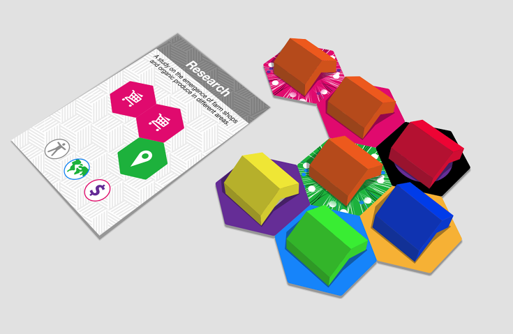

How to play
You can play two different versions of Datopolis
The warm-up version teaches you how to negotiate and build with
data (20-30 minutes)
The full version allows you to take on different player roles
in the town of Sheridan, with competing winning conditions. You must
work together to respond to environmental, economic and social crises
in the town (45 minutes - 1 hour).
How Datopolis works
Data can be open, closed or private

open data

closed data
You can lay most data tiles as open or closed.
Simply flip the tile over to show the open pattern.

private data
Private data tiles can only be laid as closed data, and can never be
opened.
Create tools that match the pattern on the tool card
- You can only create tools when the pattern on the
tool card exactly matches data tiles on the table.
-
When you lay a data tile for the first time, place a
use marker on it to show you own it.
-
Every time you use a tile to build a tool, you must place a
use marker on top of it.
-
You can only use data that you own and others open data
to build tools.
-
You can only lay new data tiles from your hand if they are
used in a tool you are creating.
During your turn you can negotiate with other players
-
You can try to persuade other players to make their data
open so you can use it to create your tool.
-
Only you can initiate negotiations, but players you
negotiate with can bring in another player to make a
three-way or four-way deal.
-
You might exchange data tiles with them. They might open some
of their data if you open yours. You might trade tool cards.
Anything goes!
-
BUT only you can put down new data tiles or create tools during your turn.

Remember
- Once you have placed data tiles on the table, they can never be moved.
- You cannot lay data tiles unless you will be using them to create a tool.
- You can only create a tool with closed data or private data if you own it.
- You can create tools using open data that is owned by other people (it is open!).
- You can flip any closed data tile you own to make it open at any
point during the game. You cannot flip an open data tile to be closed
if others have made use of it.
Warm up game (20-30 minutes)
In this game you will build tools using data tiles that might be
'open' or 'closed' data. The pattern of tiles that emerges is
called the 'data infrastructure'. The first player to complete 10
points worth of tools is the winner.
Game setup
-
Each player has a set of coloured use markers. You need
these to indicate data that you own or use, after it has been
laid as part of the data infrastructure, otherwise players
won't know who to negotiate with to open up data!
-
Pick out one data tile from the bag. If it's a private data tile, put
it back and keep picking until you get a normal data tile.
Put the data tile in the middle of the table open side up.
-
For each player in turn:
-
Pick two data tiles out of the bag.
-
Place one of them next to the middle tile, closed side up.
You can choose which one to place. The other one stays
in your hand.
-
Put one of your use markers on the tile you placed.
Correct
Five player set up, each player has
placed a tile around the open data tile as closed data ,
and placed their counter on their data tile.
Incorrect
Five player set up, but one data tile
(pink - product data) is not touching the centre open data. All
data tiles at set up must touch the central open data tile.
Getting ready to begin
-
Give each player a turn card. In this version of the game you
will not be using the roles on the inverse of the turn card.
-
Shuffle the tool cards.
-
Deal three tool cards to each player.
-
Place the remaining tool cards face down somewhere everyone
can reach them.
-
The rest of the components - event cards and town dashboard -
are not needed in the warm up game.
Players can choose to display their data and tool cards openly,
or to keep them private.
Rules of play
Choose a player to start. We recommend starting with the player
who most recently used some data - otherwise let the youngest
player start. Use your turn card to help you through each stage of your turn:
-
Take a data tile from the bag into your hand.
-
Look at the data tiles you have in your hand, your tool cards
and data that has already been laid. Negotiate with other
players. When you think you can build something:
-
Place the tool card face up in front of you so
everyone can see what you're building.
-
Place a use marker on every data tile you used to create
the tool - including data tiles that already have use
markers on them - so everyone can check that the pattern
on the card matches the data you're using.
-
Make up a name for the tool, and tell everyone what it
is and what it does.
-
You can create more than one tool during your turn, if you're
able to. When you've finished, you have the option of
discarding one of the tool cards in your hand.
-
Draw enough new tool cards so that you end your turn with
three new cards in your hand.
Play moves on to the player on the left.

Illustration Building a tool
Winning
-
Each tool is worth the same number of points as the number of
data tiles it uses. For example, a tool with three data tiles
on it is worth three points.
-
You win the game if you're the first player to create 10
points worth of tools.
-
The game ends immediately when you get to 10 points.
Full game (45 minutes - 1 hour)
The full game works in the same way as the warm up version, except
each player is working towards a different goal, and the life of
the town is declining. This version of the game introduces some new
elements:
-
Town dashboard
-
Impact scores
-
Events
-
Roles
The dashboard
This keeps track of the life of the town: its people, economy and
environment. Every turn, event cards may lower the dashboard
scores, but making tools can increase them. Different players
have different roles and different goals as a result. It's possible
for everyone to lose, or for everyone to win, or for only some
players to win.
Having an impact
Tools that you create have an impact which
increases the scores on the dashboard. There are three different
types of impact: economic, social and environmental.
Some tools can have different options for impact. You can choose which
impact a tool has when you build it, but you can only choose one
of the available options. A tool cannot have multiple impacts.
Example
This tool is a mobile app of local public clinics. It uses
democratic data (yellow), health data (red) and geospatial data
(green).
If you build it, you can choose to either increase the social
score on the dashboard or increase the environmental score. The
social and environmental icons are shown as options in colour,
while the economic icon is grey to show that it isn't an option
for this tool.
Events
Town events are bad things that happen in the town. They lower the
impact scores on the dashboard. Discard them after changing the
impact score.
Media releases are new rules from government. Only one is in
effect at any time. Keep it face up in the middle of the table.
Discard old government events when a new one is drawn.
Town crises are things that affect you when you draw them. Some
of them last until the end of your next turn, when you draw the
next event card.
Roles
There are nine roles in the game. You must not tell anyone what role
you have, but you may reveal it by what you do and what kinds of
deals you make.
Private sector roles are trying to build successful businesses.
They win if they're the first to create 10 points of tools.
Public sector roles are trying to build long-term sustainability.
They win if there's lots of open data on the board.
Third sector roles are trying to maximise impact. They win if the
imapct score they care about is highest at the end of the game.
Game setup
- Pick out one data tile. If it's a private data tile, put it
back and keep picking until you get a normal data tile. Put
the data tile in the middle of the table with the open side up.
-
For each player in turn:
-
Pick two data tiles out of the bag.
-
Place one of them next to the middle tile, closed side up.
You can choose which one to place, and the other one stays
in your hand.
-
Put one of your use markers on the tile you placed.
Getting ready to begin (full version)
-
Deal out three tool cards to each player.
-
Give each player a role card (these are on the other side of
the turn card) at random. Do not show anyone your role card.
Rules of play
Choose a player to start. We recommend starting with the player
who most recently used some data - otherwise let the youngest
player start.
-
Take a data tile from the bag into your hand.
-
Create as many tools as you want.
-
Place the tool card on the table in front of you.
-
Make up a name for the tool and tell everyone what it is and what it does.
-
Place a use marker on every data tile you used to create the tool.
-
After creating as many tools as you want, discard one of your
tool cards. You can also discard a tool that you have already
built, reducing the points you have collected.
-
Draw new tool cards so that you end your turn with three in
your hand.
-
Take an event card and do what it says.
Play now moves to the player on your left.
The end of the game
Rather than a single winner, the full version of the game has three
scenarios that bring the game to an end.
High score
-
If any player has created 10 points worth of tools the game is
over.There will be some winners and some losers.
-
Each player must show their role card and say whether they have
won or lost. Try not to end the game by creating 10 points of
tools if you're not going to win.
Utopia
-
If all the impact scores on the dashboard get to +4 the town
has become a utopia.
-
Everybody wins! (We think this is technically impossible ...).
An emergency response
-
If any impact score on the dashboard is at -4 at the
beginning of any player's turn, the town is in a precarious
state. This player has one last chance to build a tool or
tools in an emergency response - collaboration with fellow
players will be key!
-
During the emergency response turn, each completed tool will be
worth two points. The emergency response phase can only be used
twice in the game. If any impact scores get to -4 a third time,
or if you don't lift the score from -4 during the emergency
response, it's game over! Everybody loses.
Why we built Datopolis
The warm up version of Datopolis has been useful for team away days,
data workshops and strategy sessions in a range of organisations.
The full version is more suited to boardgame lovers like us who like
a bit more complexity.
We play a lot of board games, and we spend lots of our time talking
about data and open data. Datopolis lets us introduce data in a
tactile, engaging way.
We created Datopolis in the open, using feedback from playtesting
sessions for more than 12 months. The components are available for
printing and editing on GitHub and we'll continue to improve it based
on your feedback. The majority of Datopolis is openly licensed; you
can change the rules, the cards, the tiles, translate it and localise
it as long as you attribute the Open Data Institute and Folk Labs.
You can even sell your version if you want. The only exception is
for the box and illustrations in the instructions, which cannot be
used for commercial purposes.
Acknowledgements
We would like to thank everyine who helped turn this game into
reality, particularly our co-creators and playtesters:
- list of names goes here
... and everyone at the Open Data Institute. We are sorry if we have
missed your name off!
A very special thankyou to Folk Labs, who put in lots of hard work
illustrating the game, and without whom it wouldn't look this pretty.
Ellen and Jeni
Feedback
We would love to hear what you think of the game and you can contact us here.
Licensing

The cover art and illustrations in Datopolis are made available under
a Creative Commons Attribution Non-Commercial Licence. You are free
to reproduce, mash up and adapt these design elements so long as
your purpose is non-commercial and you attribute the Open Data
Institute and Folk Labs.

The individual game components, instructions, text and method are
openly licensed (CC-BY) and available at
http://github.com/opendataboardgame/game.